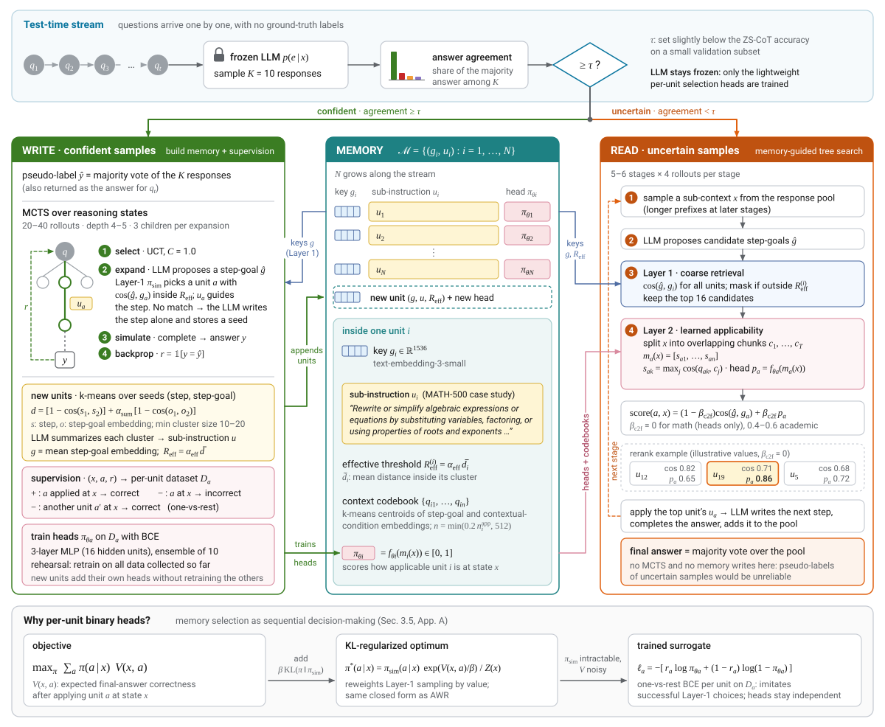
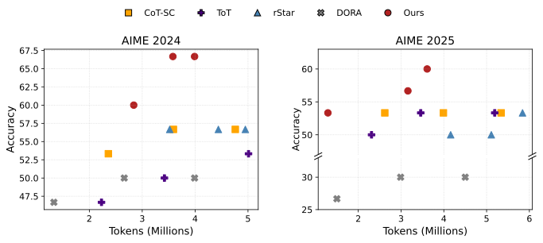
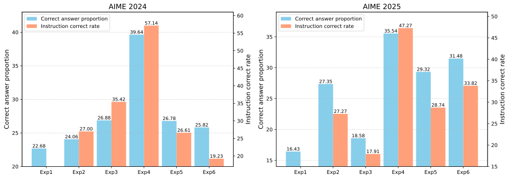

MILES: Modular Instruction Memory with Learnable Selection for Self-Improving LLM Reasoning
TL;DRMILES lets a frozen LLM improve itself at test time from its own reasoning trajectories, without ground-truth labels. From problems it answers confidently, it extracts sub-goals and the sub-skills (sub-instructions) that achieve them into a modular memory, and it learns online when to read each memory unit, so that later, uncertain problems are solved by composing these sub-skills step by step.
Please check out our other works MoRAM LLaVA-DyMoE MemAE SEMA CSReL
Abstract
Large language models (LLMs) increasingly improve their reasoning at test time via additional computation, yet most existing works treat each problem in isolation. When problems arrive sequentially, accumulating reusable experience across them can further improve performance. Existing memory-based methods either store whole-solution templates that generalize poorly to novel problems or use heuristic step-level selection that is not optimized for final-answer correctness. Learning selection policies requires large-scale training data and fixed action spaces, making such approaches unsuitable for test-time settings where memory expands incrementally and only limited supervision is available.
We propose MILES (Modular Instruction Memory with LEarnable Selection for self-improving LLM reasoning), a framework that dynamically expands step-wise memory and applies correctness-optimized memory composition under realistic test-time constraints. MILES maintains modular memory units consisting of asymmetric pairs of sub-goal embeddings and sub-instructions, each associated with a learnable selection head. This memory structure enables a coarse-to-fine retrieval mechanism: The coarse level enables memory expansion and collects supervision for training selection heads from confident samples, while the fine stage applies learned selection heads to rerank coarse-level candidates and guide reasoning for uncertain samples.
MILES consistently matches or outperforms prior methods while achieving superior accuracy–efficiency tradeoffs. Extensive experiments demonstrate its effectiveness, robustness, and transferability.
Motivation
Why MILES?
Prior test-time memory methods retrieve whole solutions, or they choose step-level units by similarity or by prompting. MILES makes step-wise memory composition a learned decision that is optimized for final-answer correctness.
Existing memory-based reasoning
- Whole-solution templates generalize poorly to problems with novel structure.
- Step-level units are selected heuristically, by similarity retrieval or by prompting the LLM.
- The selection is not optimized for final-answer correctness.
- Methods that learn selection need fixed action spaces, external labeled data, or fine-tuning.
MILES
- Modular step-level memory of (sub-goal, sub-instruction) pairs that can be composed across problems.
- A learned selection head for every memory unit, trained on rollout correctness.
- Memory expands incrementally from the model's own confident trajectories.
- No LLM parameter updates, no ground-truth labels, and no fixed action space.
Method
How MILES works
Each incoming question is routed by answer agreement. Confident questions write: they expand the memory and supply training data for the selection heads. Uncertain questions read: they retrieve memory units coarse-to-fine and use them to guide a tree search.


1Modular memory units
A memory unit is an asymmetric pair. The sub-goal \(g_i\) is an embedding of what the step should achieve and serves as the retrieval key. The sub-instruction \(u_i\) is a short natural-language directive that conditions generation. Each unit has its own selection head, so new units can be added without retraining existing ones.
Units are summarized from (reasoning step, step-goal) pairs collected on confident trajectories. The pairs are clustered with k-means, the LLM writes one generalized sub-instruction per cluster, and the mean step-goal embedding becomes the sub-goal.
\(\mathbf{s},\mathbf{o}\): step and step-goal embeddings. \(N\) grows as experience accumulates. \(\bar{d}_i\), the mean distance within unit \(i\)'s cluster, sets its effective threshold, so units from looser clusters apply more broadly.
2Coarse-to-fine selection
Layer 1 (coarse). The LLM proposes step-goals for the next step. Each step-goal embedding \(\hat g\) retrieves the stored sub-goals with the highest cosine similarity, and units beyond their effective threshold are excluded. If no unit matches, the LLM writes the step directly and the pair is kept as a seed for new units.
Layer 2 (fine). Each candidate's learned head scores how applicable it is in the current state \(x\). The state is split into overlapping chunks, and the unit's context codebook turns it into a fixed-length feature vector by max-similarity pooling.
\(\mathbf{q}_{ai}\): context prototypes for unit \(a\). \(\mathbf{c}_j\): chunk embeddings of \(x\). The top-scoring unit's sub-instruction guides the next step. \(\beta_{\text{c2f}}=0\) on math benchmarks (heads only) and 0.4–0.6 on academic ones.
3Learning the selection heads
Choosing unit \(a\) at state \(x\) should maximize the probability of a correct final answer. With a KL penalty toward the Layer-1 sampling policy \(\pi_{\text{sim}}\), the optimal policy has the same closed form as in advantage-weighted regression (Peng et al., 2019).
MILES approximates this optimum with one lightweight one-vs-rest classifier per unit, an ensemble of 10 three-layer MLPs, trained with binary cross-entropy on labels from MCTS rollouts on confident samples. Positives are states where applying \(a\) reached the pseudo-label answer. Negatives are states where \(a\) led to a wrong answer, or where a different unit succeeded.
\(V(x,a)\): expected correctness of the final answer after applying \(a\) at \(x\). \(r_a\in\{0,1\}\): whether the rollout reached the pseudo-label. The one-vs-rest design lets each head be trained independently as memory grows.
Test-time pipeline
Confident question → write
The initial responses agree on an answer.
- The majority answer becomes the pseudo-label \(\hat y\). It is also the output for this question.
- MCTS explores reasoning states (20–40 rollouts). Expansions choose units by Layer-1 similarity only, so the collected data is not biased toward the current heads.
- Each expansion is labeled by whether its rollout reaches \(\hat y\), and the (state, label) pair is added to that unit's dataset \(\mathcal{D}_a\).
- Seeds are summarized into new memory units, and the affected heads are retrained on all data collected so far.
Uncertain question → read
The initial responses disagree, so there is no reliable pseudo-label and no MCTS.
- A multi-stage tree search keeps a pool of responses. Each stage samples existing reasoning chains and truncates them, using longer prefixes at later stages.
- The LLM proposes step-goals. Layer 1 retrieves 16 candidate units, and the Layer-2 heads rerank them.
- The top unit's sub-instruction guides the next step, the LLM completes the reasoning, and the response joins the pool.
- The final answer is the majority vote over all responses in the pool.
Animated overview
A short animation of how MILES incrementally constructs memory and applies learned memory selection during reasoning.
Results
Main results
Across the 22 benchmark–backbone settings, MILES has the best accuracy in 17 and ties for the best in 4. The one exception is AIME 2025 with GPT-4.1, where Dynamic Cheatsheet (DC) scores 50.00 against 40.00 for MILES. DC's strong AIME results come mainly from its use of code execution.
| Dataset | Model | ZS-CoT | SC | DC | BoT | MILES |
|---|---|---|---|---|---|---|
| MATH-500 | GPT-4.1-mini | 88.00 | 89.40 | 87.00 | 86.80 | 92.60 |
| GPT-4.1 | 87.20 | 88.00 | 83.20 | 84.80 | 91.60 | |
| AIME 2024 | GPT-4.1-mini | 46.67 | 56.67 | 63.33 | 50.00 | 66.67 |
| GPT-4.1 | 40.00 | 50.00 | 53.33 | 50.00 | 53.33 | |
| GPT-OSS-20B | 83.33 | 93.33 | 43.33 | 50.00 | 93.33 | |
| Qwen3-30B-Instruct | 70.00 | 83.33 | 23.33 | 63.33 | 86.67 | |
| AIME 2025 | GPT-4.1-mini | 46.67 | 53.33 | 60.00 | 40.00 | 60.00 |
| GPT-4.1 | 33.33 | 36.67 | 50.00 | 33.33 | 40.00 | |
| GPT-OSS-20B | 86.67 | 90.00 | 36.67 | 33.33 | 93.33 | |
| Qwen3-30B-Instruct | 60.00 | 70.00 | 30.00 | 53.33 | 73.33 | |
| GPQA-Diamond | GPT-4.1-mini | 70.20 | 71.72 | 63.64 | 66.67 | 73.23 |
| GPT-4.1 | 68.94 | 68.69 | 64.65 | 61.11 | 70.71 | |
| GPT-OSS-20B | 68.18 | 71.72 | 61.62 | 37.37 | 74.24 | |
| Qwen3-30B-Instruct | 70.20 | 72.23 | 42.42 | 67.68 | 73.74 | |
| MMLU-Pro Physics | GPT-4.1-mini | 82.00 | 83.50 | 83.50 | 83.00 | 85.00 |
| GPT-4.1 | 81.00 | 83.00 | 78.00 | 84.00 | 84.50 | |
| GPT-OSS-20B | 85.50 | 86.50 | 79.00 | 42.00 | 87.00 | |
| Qwen3-30B-Instruct | 87.00 | 88.50 | 63.50 | 86.00 | 88.50 | |
| MMLU-Pro Engineering | GPT-4.1-mini | 65.50 | 73.50 | 67.50 | 70.50 | 75.00 |
| GPT-4.1 | 75.50 | 78.50 | 72.00 | 67.50 | 80.00 | |
| GPT-OSS-20B | 68.50 | 70.00 | 66.50 | 41.50 | 71.00 | |
| Qwen3-30B-Instruct | 74.50 | 78.00 | 52.00 | 75.50 | 81.00 |
Table 1. Final-answer accuracy (%). Bold marks the best result in each row, including ties. The same backbone is used for reasoning and for memory construction within each row. MMLU-Pro subsets use 200 randomly sampled questions each; the other benchmarks are evaluated in full.
Accuracy–efficiency tradeoff

On both datasets, every MILES run is at least as accurate as every baseline run. MILES also keeps improving as the token budget grows, while Self-Consistency, Tree-of-Thoughts, rStar, and DORA level off.
More compute helps MILES because extra MCTS rollouts on confident questions build additional memory units (Table 5). Reusing cross-problem memory captures knowledge that per-problem scaling alone cannot.
Transferability
Memory transfers across models and from offline data
The memory is textual, so it does not have to be built by the reasoning model itself. It can also be prepared ahead of time from a separate labeled set.
Cross-model transfer
GPT-4.1-mini is the reasoning backbone and produces the first 10 self-consistency rollouts used for routing. An auxiliary model produces the next 40 rollouts, which are used to build the memory.
| Dataset | Auxiliary model | Accuracy |
|---|---|---|
| AIME 2024 | no auxiliary model | 60.00 |
| Qwen3-30B-Instruct | 66.67 | |
| Qwen3-4B-Instruct | 63.33 | |
| GPT-4.1-mini | 66.67 | |
| AIME 2025 | no auxiliary model | 50.00 |
| Qwen3-30B-Instruct | 60.00 | |
| Qwen3-4B-Instruct | 56.67 | |
| GPT-4.1-mini | 60.00 |
Table 2. Accuracy (%). Memory built by each auxiliary model, including the 4B-parameter Qwen3-4B-Instruct, improves on the no-auxiliary baseline.
Pre-built memory
An auxiliary model builds the memory ahead of time on a separate labeled set: AIME 2020–2024 for AIME 2025, and the non-Diamond GPQA split for GPQA-Diamond. The memory is then applied to the 13 and 31 most uncertain test questions.
| Dataset | Auxiliary model | Accuracy |
|---|---|---|
| AIME 2025 | no memory | 23.08 |
| Qwen3-30B-Instruct | 30.77 | |
| GPT-4.1-mini | 38.46 | |
| GPQA-Diamond | no memory | 48.39 |
| Qwen3-30B-Instruct | 58.06 | |
| GPT-4.1-mini | 54.84 |
Table 3. Accuracy (%) on the most uncertain test questions, with GPT-4.1-mini as the reasoning backbone.
Ablation
Removing either selection layer lowers accuracy
| Dataset | Exp. | Layer 1 | Layer 2 | Accuracy |
|---|---|---|---|---|
| AIME 2024 | 1 | ✕ | ✕ | 60.00 |
| 2 | ✓ | ✕ | 63.33 | |
| 3 | ✕ | ✓ | 63.33 | |
| 4 | ✓ | ✓ | 66.67 | |
| 5 | ✓ | State sim. | 63.33 | |
| 6 | ✓ | LLM rerank | 60.00 | |
| AIME 2025 | 1 | ✕ | ✕ | 53.33 |
| 2 | ✓ | ✕ | 53.33 | |
| 3 | ✕ | ✓ | 56.67 | |
| 4 | ✓ | ✓ | 60.00 | |
| 5 | ✓ | State sim. | 56.67 | |
| 6 | ✓ | LLM rerank | 53.33 |
Table 4. Accuracy (%) with GPT-4.1-mini. Exp. 5 and 6 replace the learned heads with state-similarity reranking or LLM-prompt reranking.
Combining both layers (Exp. 4) gives the best accuracy on both datasets, and disabling either layer (Exp. 2–3) lowers it.
State-similarity reranking (Exp. 5) recovers part of the learned heads' gain. LLM-prompt reranking (Exp. 6) does not improve over using Layer 1 alone. The learned heads therefore capture signal that neither prompting nor surface similarity of states provides.

Analysis
Scaling, robustness, and what a sub-instruction does
Rollout budget and memory size
More MCTS rollouts per confident question give a larger memory with better coverage of the step-goal space, and higher accuracy.
| Dataset | Rollouts | Units | Acc. |
|---|---|---|---|
| AIME 2024 | 20 | 9 | 60.00 |
| 30 | 15 | 66.67 | |
| 40 | 20 | 66.67 | |
| AIME 2025 | 20 | 10 | 53.33 |
| 30 | 19 | 56.67 | |
| 40 | 25 | 60.00 |
Table 5. GPT-4.1-mini. Units: memory size.
Effect of sample order
With 20 rollouts, easy-to-hard order gives the highest accuracy on both datasets, which the paper attributes to useful memory accumulating before hard questions arrive. With 40 rollouts, the three orders are within 3.33 points of each other.
| Dataset | Order | 20 | 40 |
|---|---|---|---|
| AIME 2024 | default | 60.00 | 66.67 |
| easy→hard | 66.67 | 66.67 | |
| hard→easy | 63.33 | 66.67 | |
| AIME 2025 | default | 53.33 | 60.00 |
| easy→hard | 60.00 | 60.00 | |
| hard→easy | 56.67 | 63.33 |
Table 6. GPT-4.1-mini, accuracy (%) with 20 or 40 rollouts per confident question.
Effect of a selected sub-instruction
Under matched reasoning states, trajectories that apply a selected sub-instruction are more accurate than trajectories without one, in all 12 dataset–backbone cells, by 0.63 to 10.80 points.
| Dataset | 4.1-mini | 4.1 |
|---|---|---|
| MATH-500 | +6.48 | +2.23 |
| AIME 2024 | +10.80 | +3.77 |
| AIME 2025 | +9.12 | +2.31 |
| GPQA-Diamond | +4.36 | +3.21 |
| MMLU-Pro Phys. | +4.12 | +8.73 |
| MMLU-Pro Eng. | +0.63 | +3.87 |
Table 14 (appendix). Accuracy gain in percentage points, GPT-4.1-mini and GPT-4.1.
Case study: one sub-instruction changes the solution path
MATH-500 (algebra). Let \(x, y, z\) be positive real numbers such that \(xyz = 2\). Find the minimum value of \(x^4 + 4y^2 + 4z^4\).
Zero-shot CoT
The model applies AM–GM to \(x^4, 2y^2, 2y^2, 2z^4, 2z^4\), then works through a long equality-case computation that ends at an expression, not a number.
Final answer: \(2^{8/5} + 4\cdot 2^{3/5} + 4\cdot 2^{6/5}\) ✕ incorrect
With a selected sub-instruction
The next step substitutes \(z = \tfrac{2}{xy}\), which gives \(x^4 + 4y^2 + \tfrac{64}{x^4y^4}\). The model then sets \(a = x^4\), \(b = y^2\) and minimizes \(a + 4b + \tfrac{64}{ab^2}\).
Final answer: \(16\) at \(x = y = \sqrt{2},\ z = 1\) ✓ correct
From the paper's case studies (MATH-500, memory-guided tree search). Both trajectories share the first reasoning step.
Citation
BibTeX
@misc{tong2026milesmodularinstructionmemory,
title={MILES: Modular Instruction Memory with Learnable Selection for Self-Improving LLM Reasoning},
author={Ruilin Tong and Dong Gong},
year={2026},
eprint={2607.06974},
archivePrefix={arXiv},
primaryClass={cs.CL},
url={https://arxiv.org/abs/2607.06974},
}